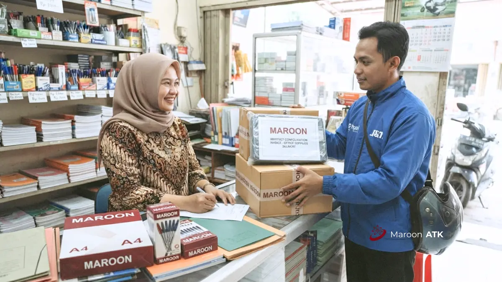

Supplier ATK yang tepat memungkinkan proses migrasi vendor tanpa pernah mengorbankan ketersediaan stok barang harian kantor. Kuncinya adalah menjalankan checklist tiga fase transisi secara berurutan: Fase 1 Audit internal & standarisasi SKU, Fase 2 Verifikasi legalitas & perpajakan vendor, serta Fase 3 Transisi distribusi logistik bersama MAROON ATK.
Bagaimana Cara Beralih ke Supplier ATK Baru Tanpa Mengganggu Operasional?
Cara beralih ke supplier ATK baru tanpa mengganggu operasional adalah dengan mengikuti tiga fase checklist, yaitu persiapan dan standardisasi internal, verifikasi vendor dan legalitas, lalu transisi operasional dan distribusi secara bertahap.
Kekhawatiran terbesar tim General Affairs saat mempertimbangkan pergantian supplier ATK adalah risiko kekosongan barang harian — seperti kertas printer habis saat audit atau tinta plotter habis saat deadline tender. Untuk itu, migrasi vendor tidak boleh dilakukan secara mendadak atau memutus vendor lama sebelum suplai vendor baru terbukti siap. Ikuti panduan checklist sistematis berikut ini.
Fase Persiapan Apa yang Harus Dilakukan Sebelum Mengganti Supplier ATK?
Fase persiapan sebelum mengganti supplier ATK meliputi audit konsumsi ATK internal, penetapan daftar SKU standar, dan penentuan batas buffer stock minimum di gudang supplier baru.
| Tahapan Fase 1 | Langkah Praktis Tindakan | Output yang Dihasilkan |
|---|---|---|
| 1. Audit Konsumsi 3–6 Bulan | Tarik data historis invoice pembelian ATK untuk menghitung rata-rata pemakaian barang per bulan. | Angka estimasi kebutuhan riil bulanan per divisi kerja kantor. |
| 2. Standardisasi Daftar SKU | Kunci spesifikasi merek, gramatur kertas (75gsm vs 80gsm), dan tipe cartridge printer seragam. | Master Catalog SKU kantor agar tidak terjadi pembelian barang non-standar. |
| 3. Alokasi Buffer Stock | Tetapkan cadangan penyangga minimal 15–20% dari kebutuhan bulanan di gudang supplier baru. | Jaminan anti-kehabisan barang saat masa peralihan PO perdana. |
Standardisasi SKU mencegah divisi kerja mengajukan permintaan barang bermerek acak yang menyulitkan negosiasi harga grosir. Dengan daftar SKU yang rapi, tim purchasing dapat meminta penawaran harga paket borongan yang jauh lebih murah kepada MAROON ATK.

Bagaimana Cara Memverifikasi Legalitas Supplier ATK Sebelum Tanda Tangan Kontrak?
Verifikasi legalitas supplier ATK dilakukan dengan memeriksa status badan hukum PT di Kemenkumham, memvalidasi NPWP dan status Pengusaha Kena Pajak (PKP), serta memastikan supplier mampu menerbitkan Surat Penawaran Harga resmi dan e-Faktur PPN yang valid.
| Dokumen / Aspek Legal | Parameter Verifikasi | Urgensi bagi Instansi & Perusahaan |
|---|---|---|
| Akta Pendirian & SK Kemenkumham | Badan hukum PT aktif dan sah secara hukum perdata | Memastikan keabsahan perjanjian kontrak jangka panjang |
| Status PKP & NPWP | Terdaftar resmi di Kantor Pelayanan Pajak (KPP) | Syarat mutlak transaksi pengadaan B2B dan kedinasan negara |
| Kemampuan e-Faktur PPN | Penerbitan faktur pajak valid tersinkron DJP Online | Mencegah risiko sanksi pajak dan memudahkan pelaporan SPT masa |
| Surat Penawaran Harga (SPH) | Resmi bertanda tangan pimpinan dan stempel PT | Bukti komparasi audit internal tim pemeriksa keuangan (SPI) |
| Dedicated Account Manager | Pemberian PIC kontak langsung yang responsif | Menghilangkan kendala komunikasi customer service bot |
Instansi pemerintah dan perusahaan yang rutin diaudit oleh kantor akuntan publik (KAP) wajib memastikan calon rekanan memiliki kepatuhan pajak 100%. MAROON ATK telah mengantongi legalitas lengkap dengan sistem e-Faktur yang terintegrasi secara digital.
Bagaimana Proses Transisi Operasional dan Distribusi Saat Beralih ke Supplier ATK?
Proses transisi operasional saat beralih ke supplier ATK meliputi penetapan jadwal drop pengiriman otomatis bulanan, penerapan sub-packaging delivery per divisi, konsolidasi invoice bulanan, dan verifikasi kelengkapan dokumen pada pengiriman perdana.
- Jadwal Drop Otomatis Bulanan: Sepakati tanggal pengiriman rutin (misalnya setiap tanggal 1 atau 15 awal bulan) bersama tim operasional vendor baru.
- Sub-Packaging per Divisi: Minta supplier memilah dan membungkus barang ke dalam kardus terpisah yang telah dilabeli nama unit kerja (misal: "Divisi Keuangan - Lt. 3", "Divisi HRD - Lt. 2"). Cara ini memangkas waktu distribusi internal GA hingga 70%.
- Konsolidasi Tagihan (Monthly Billing): Ubah sistem penagihan eceran menjadi satu tagihan bulanan terkonsolidasi lengkap dengan rincian PO pendukung.
- Pemeriksaan Berita Acara Serah Terima (BAST): Pada pengiriman perdana, cocokkan fisik barang dengan Surat Jalan sebelum menandatangani BAST sebagai bukti sah penerimaan barang.
Bagaimana Layanan Supplier ATK MAROON ATK untuk Instansi di Jakarta?
MAROON ATK melayani migrasi supplier ATK untuk instansi di Jakarta dengan dukungan Account Manager satu pintu dan jadwal drop pengiriman bulanan yang disesuaikan dengan operasional gedung perkantoran di area Jakarta.
Kami telah melayani berbagai instansi di Jakarta dengan dukungan dokumen legal lengkap, mulai dari Surat Penawaran Harga hingga e-Faktur pajak, sehingga proses migrasi vendor dapat berjalan sesuai standar audit internal maupun kepatuhan pengadaan instansi pemerintah.
Bagi tim procurement di Jakarta yang ingin mendiskusikan skema migrasi, silakan hubungi kami melalui supplier ATK untuk konsultasi lebih lanjut.
Bagaimana Layanan Supplier ATK MAROON ATK untuk Instansi di Surabaya?
MAROON ATK melayani migrasi supplier ATK untuk instansi di Surabaya dengan jalur distribusi yang terjadwal serta dukungan buffer stock guna menjaga kestabilan suplai barang kantor selama masa transisi.
Kami telah melayani berbagai instansi di Surabaya dengan pendekatan transisi bertahap agar operasional admin kantor tidak terganggu selama proses migrasi vendor berlangsung.
Bagi instansi di Surabaya yang tertarik memulai proses transisi, silakan hubungi tim kami melalui WhatsApp.
Bagaimana Layanan Supplier ATK MAROON ATK untuk Instansi di Malang?
MAROON ATK melayani migrasi supplier ATK untuk instansi di Malang dengan penyesuaian jadwal pengiriman terhadap siklus kebutuhan kampus dan institusi pendidikan setempat.
Kami telah melayani berbagai instansi di Malang, termasuk kalangan kampus dan institusi pendidikan yang memiliki kebutuhan ATK musiman mengikuti kalender akademik. Bagi tim procurement kampus di Malang yang ingin memulai proses audit dan transisi, silakan hubungi kami melalui WhatsApp.
Bagaimana Layanan Supplier ATK MAROON ATK untuk Instansi di Denpasar?
MAROON ATK melayani migrasi supplier ATK untuk instansi di Denpasar dengan skema fixed price agreement yang menjaga stabilitas anggaran meski biaya distribusi ke wilayah Bali relatif lebih tinggi.
Kami telah melayani berbagai instansi di Denpasar dengan pendekatan transparansi harga sejak awal proses negosiasi, sehingga tidak ada biaya tersembunyi yang muncul di tengah masa kontrak.
Bagi instansi di Denpasar yang ingin mendiskusikan skema migrasi, silakan hubungi kami melalui WhatsApp.
Bagaimana Layanan Supplier ATK MAROON ATK untuk Instansi di Makassar?
MAROON ATK melayani migrasi supplier ATK untuk instansi di Makassar dengan opsi termin pembayaran yang fleksibel guna menjaga likuiditas arus kas instansi di kawasan Indonesia Timur.
Kami telah melayani berbagai instansi di Makassar dengan dukungan Account Manager satu pintu yang memudahkan koordinasi meski jarak distribusi dari pusat gudang relatif lebih jauh dibanding kota-kota di Jawa.
Bagi instansi di Makassar yang ingin memulai proses migrasi, silakan hubungi kami melalui WhatsApp.
Untuk memahami lebih dulu klausul kontrak yang perlu dinegosiasikan, silakan baca panduan paket pengadaan alat tulis kantor kami. Anda juga dapat mempelajari dasar pemilihan spesifikasi perangkat kantor lain pada artikel videotron LED indoor vs outdoor.
Pelajari lebih lanjut lini produk alat tulis kantor kami, detail paket pengadaan yang tersedia, serta profil perusahaan di halaman tentang kami.
Kesimpulan
- 3 Fase terstruktur: Lakukan audit konsumsi internal → verifikasi legalitas & e-Faktur → transisi logistik bertahap.
- Kemudahan administrasi: Terapkan sub-packaging per divisi dan satu monthly billing untuk meringankan beban General Affairs.
- Zero stockout: Kunci buffer stock di gudang supplier baru sebelum mengakhiri kontrak dengan rekanan lama.
- Jangkauan 5 kota: MAROON ATK siap mendampingi migrasi suplai kantor di Jakarta, Surabaya, Malang, Denpasar, Makassar, dan sekitarnya.
- Konsultasi gratis: Hubungi tim MAROON ATK via WhatsApp untuk audit konsumsi SKU kantor Anda tanpa dipungut biaya.
Pertanyaan yang Sering Diajukan (FAQ)
Tidak, selama dilakukan bertahap dengan audit konsumsi, penetapan buffer stock, dan jadwal transisi yang jelas bersama supplier baru seperti MAROON ATK.
Instansi perlu memverifikasi legalitas PT, NPWP, status PKP, Surat Penawaran Harga resmi, serta kemampuan penerbitan e-Faktur PPN yang tersinkronisasi dengan DJP Online.
Ya, MAROON ATK melayani pengadaan ATK di Jakarta, Surabaya, Malang, Denpasar, Makassar, serta seluruh Indonesia.

Asher Angelica
Praktisi procurement korporat yang berfokus pada standarisasi operasional fasilitas kantor, tata kelola kontrak rekanan B2B, dan optimalisasi sistem logistik terintegrasi untuk perusahaan swasta serta instansi pemerintah di Indonesia.